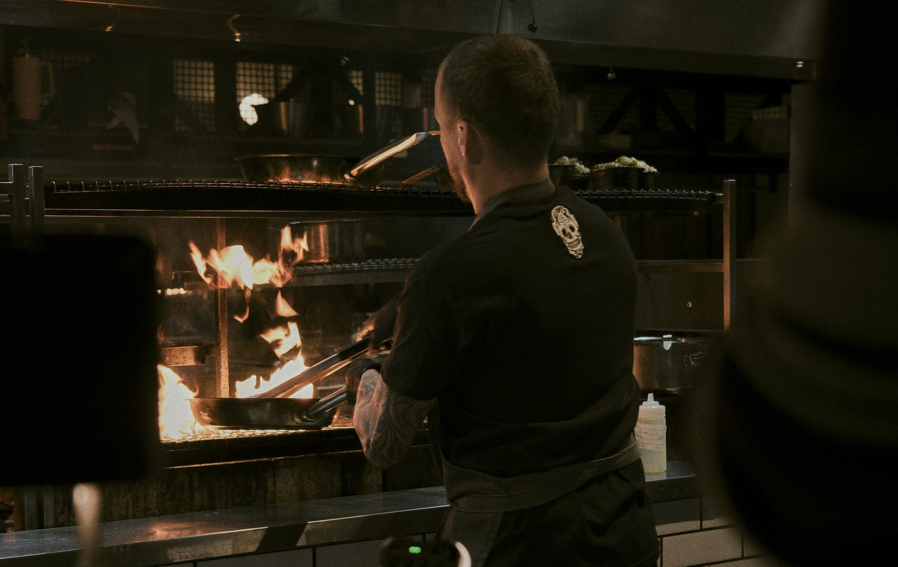
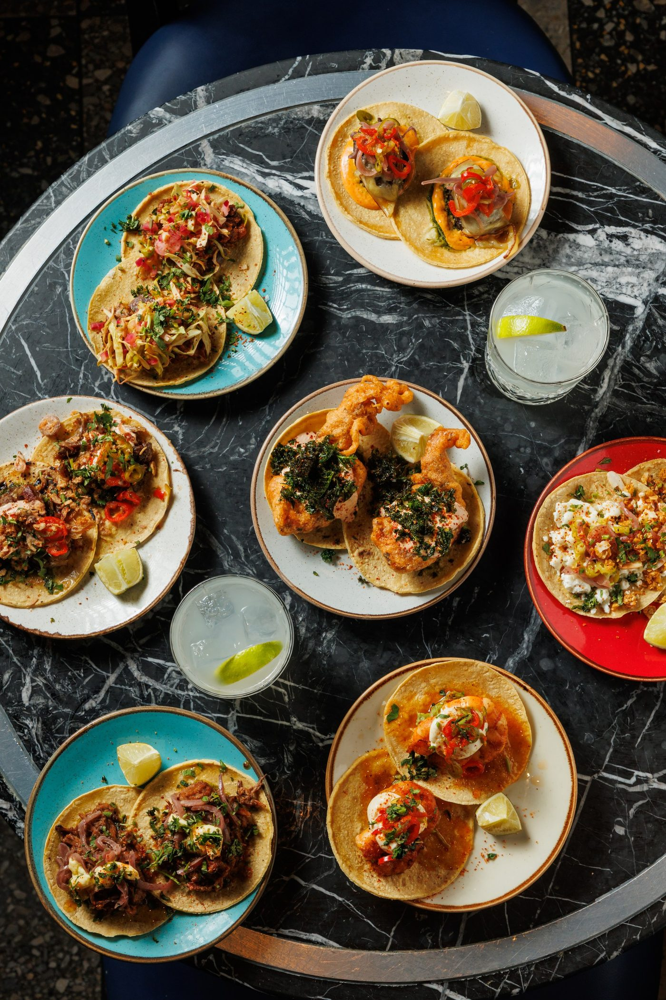

Two smokehouse rooms built around an open fire pit and a kitchen you can watch: whole animals broken down, dry-aged, grilled. Steaks, tacos, barbecue, a roast, a brunch. In other words, it's all f##ing delicious.
temper started in Soho in 2016 with a simple idea: buy the whole animal from one good farmer, butcher it in the room, age it properly, and cook it over wood and charcoal in front of the people eating it.
The City followed. Next: Bar-B-Q & Crabshack, our take on American barbecue and East Coast seafood in the old Big Easy rooms in Covent Garden and on the King's Road.

Redeemable at any temper restaurant for any dining experience. Pick a value, add a message. Masterclass vouchers too.

Confirmed in seconds. Free to cancel. Parties of 8 or fewer via OpenTable; 9+ via DesignMyNight.
Parties of 9+ · Soho · City · Bar-B-Q & Crabshack · Opening list